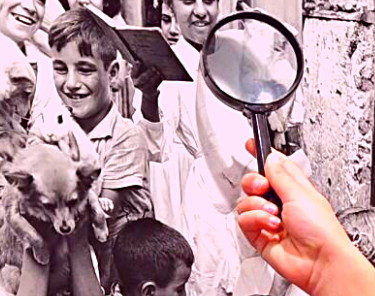
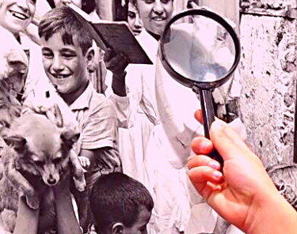

SOBRE O PROJETO
Visando aproximar as crianças do PMJ João Monteiro da história da cidade, no ano em que Poços de Caldas completa 150 anos, a professora Ana Paula Silva Moura iniciou um projeto em que as crianças visitam pontos turísticos! Daí surgiu a ideia de que os olhares fotográficos dos pequenos se tornassem postais! E da materialização desses postais, o envio de 150 pedacinhos de Poços de Caldas para o mundo, com mensagens escritas pelas crianças!
Além dos passeios, as crianças têm estudado sobre a história da cidade, recebendo a visita de historiadores e até de informações e conteúdos de Caldas da Rainha, cidade-irmã de Poços de Caldas, lá de Portugal, por causa das águas termais!
 

Foto: Ana Paula Silva Moura
Em um projeto como esse se aprende muito mais do que a história da cidade e se fazem muito mais do que passeios e visitas: desenvolvem-se competências e habilidades, ampliam-se as visões de mundo, cumpre-se o direito à cidade, promove-se uma educação significativa, valorizam-se as raízes da nossa terra e a comunidade.
Imagine só o que é para essas crianças da Zona Sul de Poços de Caldas, ver suas mensagens e fotografias ganhando o mundo!

Através desse projeto, queremos mostrar às crianças o quanto cada uma delas é importante e que os sonhos podem ser realizados.
PARTICIPE E FAÇA O PROJETO ACONTECER!

Clique abaixo e preencha o formulário para receber um dos 150 postais:
Ao receber o postal, tire uma foto e marque @pocos150postais no instagram
ATINGIMOS A META DA CAMPANHA!
Muito obrigada a todos os contribuintes da nossa vaquinha!

Apoiadores
Janaína, Bárbara, Tatiane, Malu, Priscila, Daniel, Maristela S, Maristela M, Talita, Milena, Marília, Valéria, Renato, Daniela, Marcelle, Adriana, Joaquim, Matheus, Juliene, Luis, Bruno, Bruna e Leila
ETAPAS DO PROJETO
- Visita ao Instituto Moreira Sales
- Visita ao Cristo Redentor: soltura dos balões com mensagens
- Visita ao Recanto Japonês
- Visita ao Véu das noivas
- Visita ao Centro (Praça, Urca e Museu)
- Passeio pela Zona Sul
- Eleição para escolha das fotos para os postais
- Impressão dos postais
- Escrita das mensagens nos postais
- Ida aos Correios para envio!

RECEBA UM DOS 150 POSTAIS!
Receba em casa um postal dos 150 anos de Poços de Caldas
Com uma mensagem de uma das crianças do Projeto!
Tire uma foto do postal recebido e marque nosso instagram